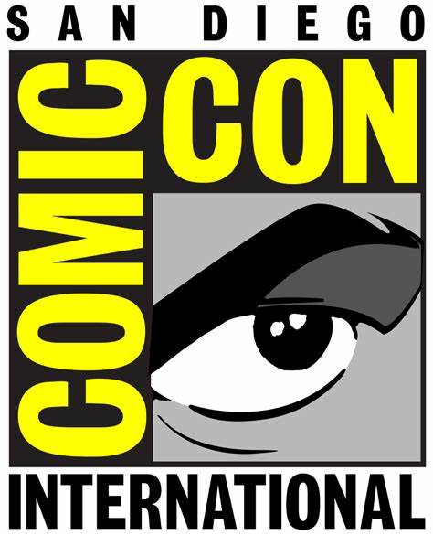

The SAN DIEGO COMIC CONVENTION (Comic-Con International) is a California Nonprofit Public Benefit Corporation organized for charitable purposes and dedicated to creating the general public’s awareness of and appreciation for comics and related popular art forms, including participation in and support of public presentations, conventions, exhibits, museums and other public outreach activities which celebrate the historic and ongoing contribution of comics to art and culture. With attendance topping 130,000 in recent years—in a convention center facility that has maxed out in space—the event has grown to include satellite locations, including local hotels and outdoor parks. Programming events, games, anime, the Comic-Con International Independent Film Festival, and the Eisner Awards all take place outside of the Convention Center, creating a campus-type feel for the convention in downtown San Diego.